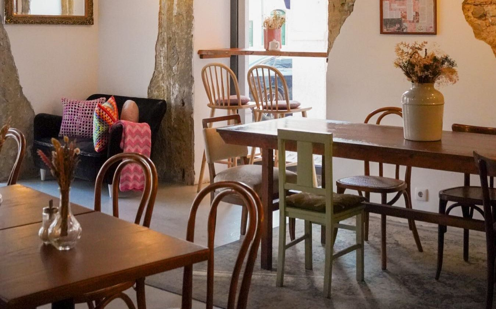

Our story
A couple left their jobs and opened a small Miolo in Bairro Alto in 2019. In early 2022 they moved to the bigger room on Rua de Belém.

Specialty 100% arabica coffee, made with Roastelier by Nescafé: a house blend and three single origins. The yogurt is sweetened with organic honey from Monte das Aranhas.
- Address
- Rua de Belém 36
- Open
- Every day, 9h to 16h30
- Tables
- Walk-ins only
- Pets
- Welcome